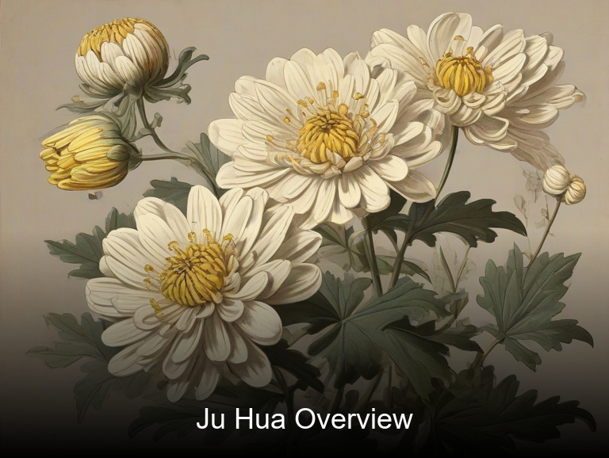
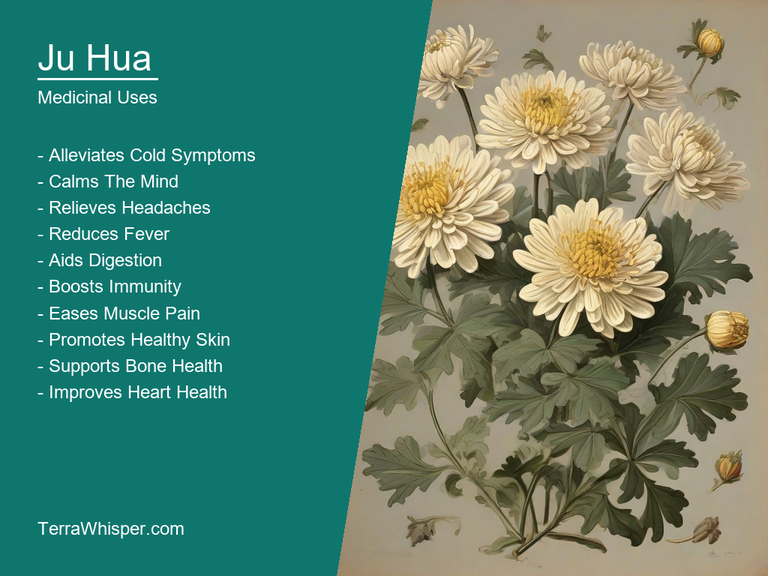
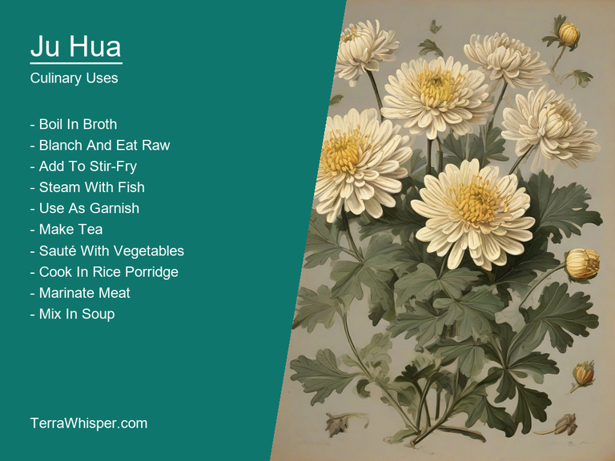
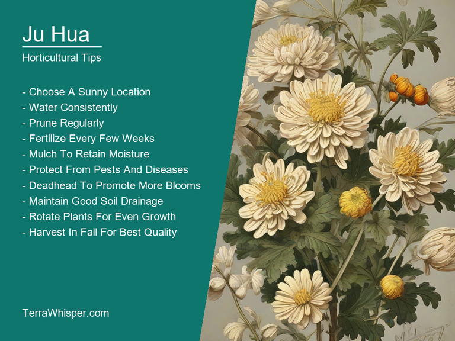
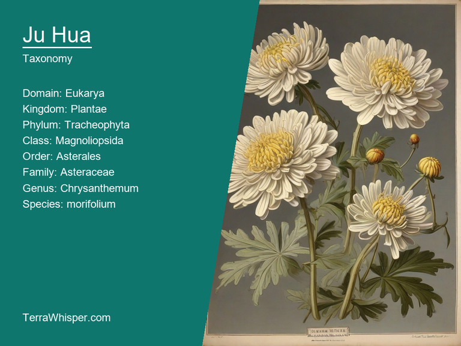
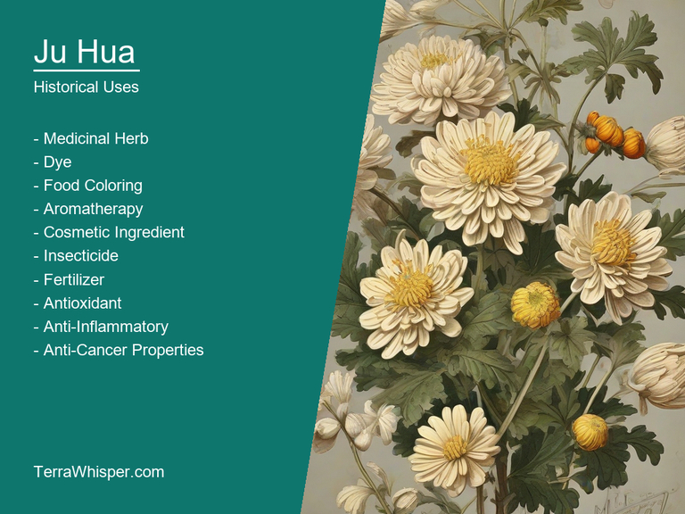

Ju Hua, scientifically know as Chrysanthemum morifolium, is a versatile plant with medicinal, culinary, horticultural, ornamental, botanical, and historical significance. Originating in Asia, specifically from the northern part of China, this flower has been widely cultivated since centuries ago for its multifaceted uses.
The medicinal and culinary aspects of Ju Hua have been embraced by various cultures throughout history. It's valued for its ability to treat several ailments such as liver maladies, insomnia, anxiety, headaches, and digestive issues. Traditionally, it has been used in herbal teas or other forms of preparation to provide relief from these health problems.
In addition to its medicinal attributes, Ju Hua has been highly sought after for culinary purposes. Its tender flowers can be transformed into flavorful delicacies such as salads, soups, and stir-fries, adding a delicate floral taste and an appealing aesthetic element to any dish.
The horticultural aspects of Ju Hua are impressive in terms of its adaptability to various growing conditions, allowing it to thrive across many geographic locations. It is widely grown as an ornamental plant due to its beautiful appearance, which ranges from small and delicate flowers to larger blooms with intricate patterns. The plant's versatility makes it suitable for a wide range of garden styles, from formal gardens to naturalistic landscapes, giving the gardeners an opportunity to incorporate this stunning flower into their designs.
Finally, Ju Hua has a rich botanical and historical background that is worth exploring. Its botanical classification is intriguing as it belongs to the Asteraceae family, which includes other well-known flowers such as daisies and sunflowers. As for its historical significance, records date back to ancient times in China where it has been used for centuries to treat various health issues, as well as for decorative purposes.
In this article, you will discover what are the medicinal and culinary uses of ju hua. Then, you'll learn how to cultivate it, what is its botanical profile, and how it was used historically.
Ju hua (Chrysanthemum morifolium) has many health benefits, including its ability to promote better digestion and help maintain healthy liver function by lowering liver enzymes. It also helps reduce stress, boost mood, support immune system functioning, and improve sleep quality. Moreover, it can protect against cell damage and promote heart health by preventing plaque buildup in the arteries.
The following illustration lists the most important uses of ju hua in medicine.

The medicinal constituents of Ju hua include chrysin (flavonoid), luteolin (flavone), quercetin (flavonol), and other flavonoids, which offer strong antioxidant and anti-inflammatory properties that help alleviate various health issues.
The most commonly used parts of Chrysanthemum morifolium are its flowers, leaves, and stems. Medicinal preparations can be made from these parts in the form of teas, extracts, decoctions (a method where plant material is boiled in water), tinctures (a mixture of alcohol and herbal ingredients), or as an essential oil. Some commonly practiced traditional Chinese medicine remedies include using Ju hua to treat fever, headaches, insomnia, dizziness, and even eye disorders.
While Chrysanthemum morifolium has several health benefits, it is crucial to note that some individuals may experience side effects when consuming the plant. These can include allergic reactions in sensitive persons, stomach upset, or possible interactions with certain medications. It's best to discuss consumption plans and consult an expert if you have any concerns regarding your personal situation.
To ensure safe use of Ju hua, follow proper precautions. Consult a healthcare professional before adding it to your treatment regimen, especially if you are pregnant or breastfeeding, taking medication, or have underlying health conditions such as liver or kidney problems. Keep in mind that dosage and frequency might also need adjustments based on individual needs. It's always recommended to source Chrysanthemum morifolium from reputable suppliers to ensure the highest quality of herbal products.
Ju Hua is commonly used for culinary purposes to enhance the flavor of various dishes due to its unique taste profile. It's often incorporated into stir-fries, soups, and teas because of its distinctively fragrant aroma that brings out the essence of other ingredients in a dish.
The following illustration lists the most common uses of ju hua for culinary purposes.

The flavor profile of Ju Hua is primarily characterized by its sweetness with subtle notes of earthiness. These complex taste elements can make dishes more nuanced and enjoyable for diners.
In terms of edible parts, Ju Hua mainly utilizes the flowers which are harvested from their flowering plants. The delicate blooms add not only beauty to dishes but also offer a delightful texture contrast when paired with other ingredients.
For an optimum culinary experience, it's essential to prepare and cook Ju Hua properly. It's typically quicker to stir-fry or sauté the flowers as they can lose their color quickly during prolonged cooking methods such as boiling or stewing. Incorporating them into dishes at the right time helps preserve their freshness and delicate flavor.
Although safe in limited amounts, it's important to be aware of potential side effects and toxicity before increasing consumption. Ju Hua contains trace amounts of cyanide compounds which can cause adverse health issues if consumed excessively or repeatedly. Therefore, careful monitoring of intake is crucial for a healthy, well-rounded diet.
To grow Ju Hua (Chrysanthemum morifolium), start with seeds or established plants from a reliable source. Plant them in well-drained, fertile soil with a pH of around 6 to 7, rich in nutrients and organic matter. Provide full sun exposure for optimal growth. Space the plants 25 to 30 centimeters apart to allow air circulation and prevent diseases. Keep the soil consistently moist but not waterlogged.
The following illustration lists the most important tips to cutlitvate ju hua.

The ideal growing conditions for Ju Hua include a location with good air circulation, partial shade, and proper lighting that doesn't cause overheating. The temperature should range from 10 to 24 degrees Celsius (50 to 75 Fahrenheit), which ensures steady growth throughout the season. It is also important to maintain adequate spacing between plants to avoid competition for nutrients and sunlight, promoting better overall health.
To ensure healthy, long-lasting Ju Hua plants, regular maintenance should be performed. Watering once or twice a week, depending on weather conditions, helps the plant retain moisture and prevents wilting. Deadheading spent flowers regularly encourages continued blooming by diverting energy to new flower production. Fertilize with a balanced fertilizer every two weeks during the growing season, following label instructions for application rates. Lastly, monitor the plants closely for any signs of pests or diseases and address them promptly to maintain a thriving garden.
Ju Hua, with botanical name Chrysanthemum morifolium, belongs to the domain Eukaryota, kingdom Plantae, phylum Magnoliophyta, class Magnoliopsida, order Asterales, family Asteraceae and genus Chrysanthemum. It is commonly known as Chinese chrysanthemum or flowering plant. There are various variants of Ju Hua like Green Button, Indigo Heron, Yellow Button, Red Button and Daisy Button with slight differences in color and appearance.
The following illustration display the botanical profile of ju hua.

The morphology of Chrysanthemum morifolium consists of a herbaceous perennial bush which reaches up to one meter in height, green to glossy leaves, and daisy-like flowers with a yellow center that develops into white seeds called fruits after the bloom cycle ends. The common name Ju Hua is derived from Chinese words "ju" meaning flower and "hua" which stands for blooming flowers; hence, it refers to the chrysanthemum in full bloom when in use as a medicinal herb.
The geographic distribution of Chrysanthemum morifolium spans across Asia, including countries like China, Japan, Korea, and the temperate regions of Russia. It can be found growing naturally in various landscapes like mountain meadows, along river banks, or even as weeds. These plants are often cultivated in gardens for their aesthetic appeal, medicinal properties, and use in traditional Chinese medicine.
The life-cycle of Chrysanthemum morifolium typically begins with germination from seeds which are sown during early spring season and lasts through a yearlong cycle of growth. Depending upon the environmental conditions, the plant undergoes various stages such as seedling development, vegetative growth, flowering, and finally, seed dispersal before entering dormancy for the winter season. These flowers, valued not only for their aesthetics but also due to its therapeutic uses in traditional medicine, have been utilized in Asia since ancient times.
The Origin of "Ju Hua" - Chrysanthemum morifolium and its meaning over time from an ancient language to present-day usage in Chinese culture starts with understanding that JuHau originated as a phonetic translation for the Latin term, 'Chrysanthemum', referring generally back through Ancient Greek origins via Kheiranthos of Aenus. The specific strain of this beautiful flower known today is Chrysanthemum morifolium which was grown during Imperial China in Qing Dynasty as a medicinal plant and later came to symbolize the Confucian idea or essence, 'Jeni' - purity/pure mindedness (similarities with Greek philosophical ideology that focused on moral virtue).
The following illustration lists the most well known historical uses of ju hua.

Cultural Significances of Ju Hua reflects throughout historical phases beginning in Ancient Chinese traditions to modern times. The flower became closely tied to the Chongqing Opera, a prominent regional performance style unique for its use as stage props and costumes made from these lovely blossoms (known colloquially during that period by locals simply as 'Flower-Drama' where men traditionally performed feminine roles). A time after Imperial China was overthrown, in the 20th century onward - Ju Hua came to be a symbol of modernity and national identity amidst Chinese art forms like calligraphy (as well used decoratively during that era within public places such as parks) or painting which saw artistic evolution away from traditional styles toward new ways incorporating western techniques into an already deeply rooted cultural heritage.
Myths and Legends of Ju Hua is woven through Chinese folklore with a unique spin – one story tells about two friends named Ping An & Fang Shu, who discovered this plant in their garden as it rained constantly for 39 years while underwater they were granted supernatural abilities enabling them to communicate telepathically like fish. Another legend is of an Emperor during the Qin Dynasty being gifted a potent herb with magical properties that allowed him eternal life, but he became so obsessed over this wish - in trying to hold onto his youthful appearance through botanical beauty - even sacrificing loved ones for it; eventually turning into what was believed myth by contemporary societies of China.
Literary References are found throughout numerous genres and authors from ancient times onwards using references associated with the cultural significance, medicinal purpose or metaphoric power symbolism within stories ranging in complexity reflecting their contexts over these millennia - such as 6th century poet Xu Lingerang referring to Ju Hua for its beauty amidst a world ravaged by war and destruction (Poem
Folkloristic Uses of Ju Hua have evolved over time but retain similar traditions which center upon using it medicinally, decoratively (including fashion and home furnishings) along with ritual ceremonies like weddings or funeral rites where flowers play prominent roles reflecting both individual's character/personal beliefs while simultaneously linkage back to ancient customs still practiced today in rural parts of China.